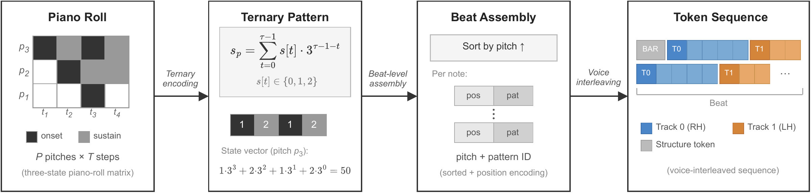
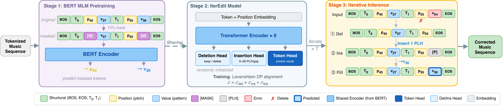

Correct local errors
Per-token sequence tagging identifies and corrects errors while retaining the surrounding music.
Listen to error correction →ACM Multimedia 2026 · Symbolic music
1 South China University of Technology, Guangzhou, China
2 Nanjing University, Nanjing, China
* Corresponding authors
Generate music by editing a draft. A shared BEAT representation supports note correction, accompaniment revision, and segment completion through explicit edit operations.
Three editing tasksMusic creation is fundamentally a process of revision. Yet symbolic music generation remains dominated by paradigms that produce complete sequences from scratch, with limited support for selective modification. Edit-based methods have proven effective for text transformation tasks, but remain largely unexplored for symbolic music. We trace this absence to the representational level: conventional event-based music encodings lack the structural properties required by explicit music editing. In contrast, the BEAT encoding, a beat-grid-anchored representation originally designed for autoregressive generation, possesses structural properties amenable to editing. We propose BeatEdit, the first framework for symbolic music generation based on explicit edit operations, recasting generation as producing new content by editing a draft rather than synthesizing from scratch. BeatEdit comprises three complementary mechanisms along an axis of increasing edit density: per-token sequence tagging for error correction, iterative refinement for accompaniment editing, and tag-then-fill for segment completion. All these mechanisms share a single encoding and pre-trained backbone, achieving higher precision and perceptual quality than autoregressive and diffusion methods across all three tasks, while remaining efficient, with single-pass inference completing in under 100 ms. Cross-encoding evaluation further reveals that encoding design substantially influences editing effectiveness, with notable encoding–method interaction effects.
01 / Interactive examples
Compare each method on the same excerpt.
Scroll through the outputs and press play.
Original recordings and piano rolls from the BeatEdit demo. All 19 examples and comparison systems are retained.
Play a result directly, or hear the input followed by that method.
All methods use the same selected example. Ground truth is an observed target, not a generated output. The original demo sample order and labels are unchanged.
BEAT-A: absolute pitch, separate tokens. BEAT-B: relative pitch, separate tokens. BEAT-C: relative pitch, bundled tokens. BEAT-D: absolute pitch, bundled tokens.
Roll colors are the original visualizations, not an edit-operation overlay. MIDI playback is synthesized and can sound different from the recordings.
02 / Method
Built on BEAT: Tokenizing and Generating Symbolic Music by Uniform Temporal Steps ↗. BEAT anchors notes to a beat grid, giving local edits a stable structure. Three complementary mechanisms share this encoding and a pre-trained backbone, from sparse corrections to dense completion.

Per-token sequence tagging identifies and corrects errors while retaining the surrounding music.
Listen to error correction →Iterative deletion, insertion, and prediction reshape the accompaniment while preserving the melody.
Listen to accompaniment editing →A tag-then-fill process allocates the missing content and predicts it using the surrounding context.
Listen to segment completion →
03 / Resources
@inproceedings{gu2026beatedit,
title = {BeatEdit: Symbolic Music Generation as Explicit Editing},
author = {Gu, Haoyu and Qian, Lekai and Zhou, Haowu and Liu, Qi and Wang, Shuai},
booktitle = {Proceedings of the 34th ACM International Conference on Multimedia},
year = {2026},
doi = {10.1145/3767308.3835589}
}